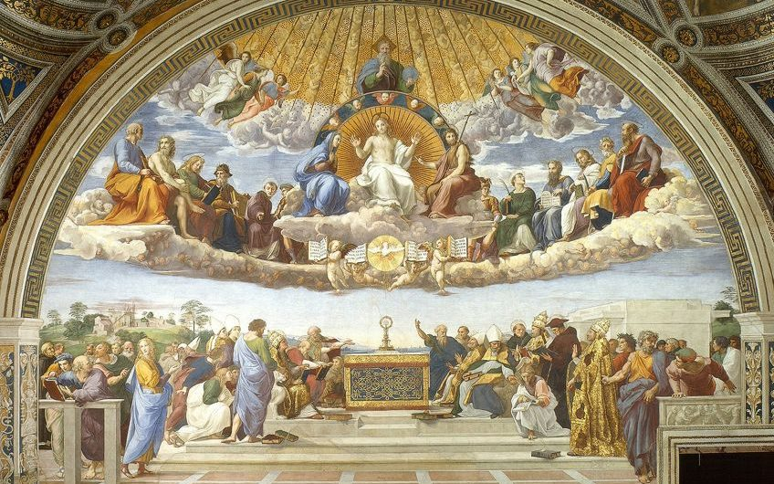

<!DOCTYPE html>
<html lang="en">
<head>
    <meta charset="UTF-8">
    <meta http-equiv="X-UA-Compatible" content="IE=edge">
    <meta name="viewport" content="width=device-width, initial-scale=1.0">
    <title>Document</title>
</head>
<body>
    
</body>
</html>
<h2> Medieval Origins  </h2>

<h2>Origins and rise of humanism</h2>
<p>
    Origins and rise of humanism
The term Middle Ages was coined by scholars in the 15th
 century to designate the interval between the downfall 
 of the Classical world of Greece and Rome and its rediscovery
  at the beginning of their own century, a revival in which 
   felt they were participating. Indeed, the notion of a long period 
   of cultural darkness had been expressed by Petrarch even earlier. <br>
    Events at the end of the Middle Ages, particularly beginning in 
    the 12th century, set in motion a series of social, political,
     and intellectual transformations that culminated in the Renaissance. 
     These included the increasing failure of the Roman Catholic 
     Church and the Holy Roman Empire to provide a stable and unifying '
     framework for the organization of spiritual and material life, the
      rise in importance of city-states and national monarchies, 
      the development of national languages, and the breakup of the old feudal structures.

</p>
